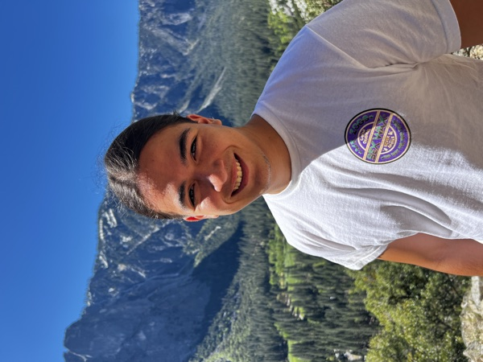

About me
I build hardware, and the machines that test it.
I'm a mechanical engineer in Los Angeles, trained in aerospace at Purdue. In practice I do whatever a project needs: design, analysis, manufacturing, electronics, code.
What ties it together is the line between hardware and software. Usually that means robotics, and the machines that build other things.
Now
These days I'm at Terraform Industries, led by @CJHandmer, on the electrolyzer team. The company runs on three machines: a reactor, direct air capture, and the electrolyzer.
Together they turn sunlight and air into natural gas. I've been on electrolyzer the whole time, doing a bit of everything: design, manufacturing, analysis, and test.
The build I'm proudest of is a plastic welding machine that assembles the stacks. I built it from the mechanical structure through the electronics, and design injection molded parts for the product in parallel.
The best parts never show up in a CAD model. I taught myself electronics here, and now build my own power and control panels.
I also picked up enough networking to get most machines talking to each other. Some of my best days were in the desert, blowing up electrolyzer stacks with hydrogen and oxygen to find their limits.
Background
I grew up in Lima, Peru, and moved to the US in 2021 for school. I went to Purdue for aerospace because I wanted to build rockets.
I still have a soft spot for that world, but the hands-on part is what stuck. I like the shop as much as the CAD seat: machining, welding, wiring, and writing the code that runs the thing.
I'm a generalist by default. Most of what I know I taught myself, usually because I wanted to finish something I'd started.
Experience
- 2025Terraform Industries: on the electrolyzer team at a startup turning air and sunlight into natural gas, where I design, build, and test the machines that make the stacks.
- 2024Zipline: designed test and manufacturing hardware for an autonomous delivery drone company, mostly the rigs that qualified motors, propellers, and batteries.
- 2023Bridgestone: re-engineered imported tire-assembly machines to meet US standards and run faster during a large plant expansion.
- 2022NASA RETH Institute: built and tested a thermal panel that let a scaled habitat model trade heat with a real-time simulation.
- 2022Bechtel Innovation and Design Center: mentored students through the design process and taught them to run the machine shop.
- 2021Purdue Space Program: Liquids: helped design the injector for a student-built methane and oxygen rocket entered in a desert launch competition.
Outside Work
Off the clock I'm usually building something that moves, taking broken hardware apart, cooking past my skill level, or surfing when the water cooperates. The lightsaber on this site is a pretty normal weekend.
Contact
If you're building something hard, I'd like to hear about it.